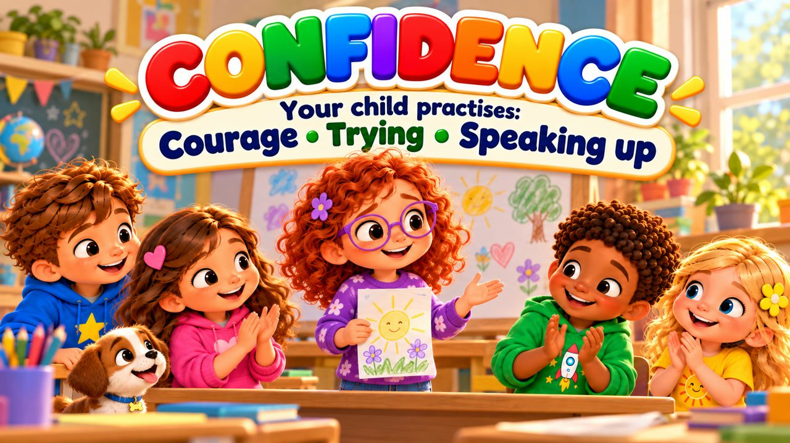
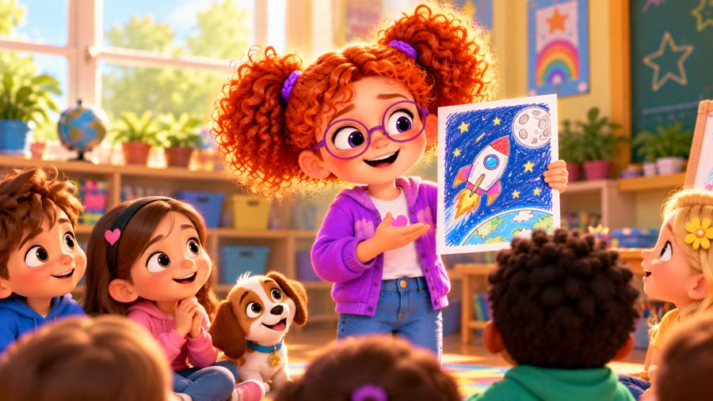
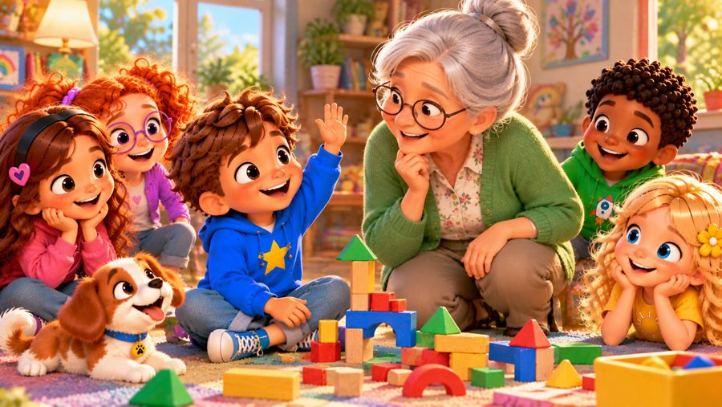

I Believe in Me
A confidence song for kids! 💪 Sing along with Max, Mia, Jay, Lily, Rosie and Buddy the puppy as they learn that being brave doesn't mean never feeling scared — it means taking a breath, standing tall and giving it a try!
"I Believe in Me" is a sing-along self-confidence song for kids. Rosie is nervous to share her idea in front of the class, Mia is afraid to join a new game — but step by step they find their courage, make mistakes, learn and grow. With big karaoke lyrics on screen, it's perfect for preschool, kindergarten and early elementary kids (ages 3–8), at home or in the classroom.

▶💡 Why this skill matters: confidence
Self-confidence gives children the courage to try new things, speak up and keep going when something is hard. It grows from small successes and from adults who believe in them. Give your child real chances to do things on their own and celebrate the courage to try, not only the result.
👨👩👧 What your child learns
- It's okay to feel shy or nervous — you can still try
- A simple brave plan: take a breath, stand tall, give it a try
- You don't have to know it all or be the best
- Mistakes are part of learning
- Asking for help and speaking up with your own ideas
💬 Talk about it after the song
- When did you feel a little nervous but tried anyway?
- What helps you feel brave?
- What is something new you'd like to try this week?
🏅 Quiz & Certificate
Watched the song together? Now read each question aloud — your child points to the right picture. Answer all 6 questions and your child earns a printable certificate!
🔒 The name is only used to draw the certificate on your device. We don't save or send anything.
You did it! 🎉
All 6 answers are right! Type your child's name to make the certificate.
🖨️ Free printables
Free for home and classroom use. Print on A4 or Letter paper.
🖼️ Scenes from the song






🎵 More songs


🎤 Lyrics – I Believe in Me
Sometimes I feel a little shy,
Sometimes I'm scared to even try.
But I take a breath and say to me...
"I can try.
I can learn.
I believe in me!"
Today I stood in front of class,
My heart was beating really fast.
I had something I wanted to say,
But all my brave words hid away!
I took a breath, I counted three,
One... two... three...
Then quietly said, "Just be me."
I raised my hand and shared my thought,
And guess what?
It wasn't as scary as I thought!
I don't have to know it all,
I don't have to be the best.
I can take one little step,
And simply do my best!
I believe in me!
I believe in me!
I can try something new
And see who I can be!
I believe in me!
Step by step I grow.
I may not know it yet,
But I'm ready now to go!
Take a breath!
Stand up tall!
Give it a try —
That's confidence!
I believe...
I believe in me!
I saw a game I'd never played,
For just a moment, I was afraid.
"What if I can't?"
"What if I'm wrong?"
Then my friends said,
"Come along!"
I tried one step,
Then tried one more,
And soon I learned what the game was for.
I made mistakes — and that's okay,
I learned a little more that day!
I don't have to know it all,
I don't have to be the best.
I can take one little step,
And simply do my best!
I believe in me!
I believe in me!
I can try something new
And see who I can be!
I believe in me!
Step by step I grow.
I may not know it yet,
But I'm ready now to go!
Take a breath!
Stand up tall!
Give it a try —
That's confidence!
I believe...
I believe in me!
Feeling nervous?
TAKE A BREATH!
Something new?
GIVE IT A TRY!
Made a mistake?
THAT'S OKAY!
Need some help?
I CAN ASK!
Have an idea?
SPEAK UP!
Ready to try?
YES, I AM!
Who do you believe in?
I BELIEVE IN ME!
Being confident
doesn't mean
I'm never scared.
It means I can try
even when
I feel a little nervous.
I can learn.
I can grow.
I can ask for help.
And I can be myself!
I believe in me!
I believe in me!
I can try something new
And see who I can be!
I believe in me!
Step by step I grow.
I don't have to know it all
Before I'm ready to go!
Take a breath!
Stand up tall!
Use my voice!
I'll give it a try!
I can learn!
I can grow!
There's so much more
that I can know!
I believe in me!
Yes, I do!
And you can believe
in yourself too!
One little step...
Then one step more.
I don't know everything...
But I'm ready to explore.
I can try.
I can learn.
I can grow.
I believe in me!